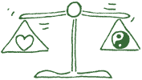
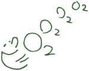
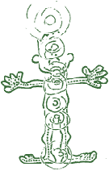
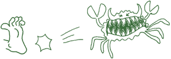

Behandlungsmethoden
Regulationstherapie
Bei vielen chronischen Erkrankungen das ganzheitliche Verfahren mit dem Konzept, über die Normalisierung von Regulationsvorgängen im menschlichen Organismus Heilung oder Linderung zu erreichen.
Über Infusionen in die Vene bekommen Sie homöopathische und pflanzliche Komplexmittel, die auf natürliche Weise:
- Ablagerungen im Gewebe und in den Gelenken abbauen.
- den Zucker oder Kohlehydrathaushalt in Ordnung bringen.
- die Haar- oder Kranzgefäße vom Stoffwechselmüll reinigen.
- Entgiftungsfunktionen (Leber - Niere - Bauchspeicheldrüse - Darm) normalisieren und mobilisieren.
- Ihr Abwehrsystem aktiv stärken.
- einen Ausgleich schaffen zwischen dem anregenden und beruhigendem Nervensystem.
- (Sympathikus und Parasympathikus)
- einen positiven Einfluss haben auf Ihren Hormonhaushalt.
Empfehlenswert bei: z.B.
- Gelenk- und Weichteilrheuma
- Arteriosklerose
- venöse und arterielle Durchblutungsstörungen
- Herzinfarkt/Schlaganfall-Prophylaxe
- Altersdiabetes (bevor Sie Insulin spritzen)
- chron. Leberleiden
- Adipositas
- zur begleitenden Krebsnachsorge
- bei allen Hauterkrankungen
- zur allgemeinen Aktivierung und Stabilisierung der biologischen Lebensfunktionen. Der
Osterputz von Innen
.
Schon nach kurzer Zeit spüren Sie eine Zunahme der Lebensqualität, des Leistungsvermögens und einer stabilen Gesundheit. (1x pro Woche über 8-10 Wochen)
Sauerstofftherapie nach Wehrli
Blutwäsche (im Volksmund)
Sauerstoffmangelerkrankungen entstehen nicht durch Sauerstoffmangel aus der Umgebungsluft, sondern durch gestörte biologische Funktionen im Organismus, Sauerstoff als Grundelement des Lebens, als Energie- Spender zu verarbeiten.
Das Blut wird über die Vene mit Sauerstoff angereichert, um als Aktivator des Stoffwechsels Ablagerungen im Gefäß und Gewebe abzubauen.
Die wichtigste Einsatzmöglichkeit der Sauerstofftherapie ist die Durchblutungsstörung (1x pro Woche über 8-10 Wochen)
| Lokalisierung | Vorstadien und Symptome |
|---|---|
| Herz | Kurzatmigkeit bei Belastung, Druck- Brennen in der Brust, innere Unruhe, Schlafstörungen, ausstrahlender Schmerz in Brust und rechtem Arm. Beklemmung und Angstzustände. |
| Gehirn | Rasche Ermüdbarkeit, Konzentrationsstörungen, Nachlassen der Merkfähigkeit, Sehstörungen, Ohrensausen, Schwindel und Kopfschmerz bei geistiger Anstrengung. |
| Arme und Beine | Blässe, Kälte- und Schweregefühl, Kribbeln, Taubheitsgefühl, eingeschränkte Gehstrecke, Wadenkrämpfe, schlechtheilende Wunden. |
Neuraltherapie
Organe, Muskulatur, Bindegewebe und Hautareale werden von gleichen Nervenwurzeln versorgt. Es besteht also ein zusammenhängendes Reaktionsverhalten. Das ist die Basis für den Wirkmechanismus der Neuraltherapie.
In Schmerz- oder Akupunkturpunkte werden biologische Präparate gespritzt, um über diesen nervalen Zusammenhang Schmerzen zu beseitigen, Blockierungen aufzulösen, Heilung zu erzielen. Die Wirkung kann unmittelbar sein und Schmerzen sofort beseitigen. (sog. Sekundenphänomen).
Bei allen akuten und chronischen Schmerzzuständen. (1-3x pro Woche)
Eigenbluttherapie
Bei der Eigenbluttherapie wird aus der Vene Blut entnommen, oft mit einem homöopathischen Mittel angereichert und dann intramuskulär (in das Gesäß) injiziert (gespritzt).
Durch den Abbau des eigenen Blutes an dieser Stelle des Körpers kommt es zu Abwehrreaktionen im Körper, die Sie bewusst nicht wahrnehmen, die aber unterbewusst Ihre Abwehr nachhaltig stärken und stabilisieren. (1x pro Woche über 8-10-Wochen)
Begleitende biologische Krebstherapie
Die biologische Krebsabwehr oder -therapie ist aus ganzheitlicher Sicht gleichwertig neben der klassischen schulmedizinischen Therapie einzuordnen. Beide Therapien haben Ihren Stellenwert und ergänzen sich. Der diagnostizierte Tumor ist nicht der Anfang, sondern das Ende der Krebserkrankung. Er ist das Ergebnis langjähriger Regulationsstörungen:
- im hormonell/nervlichen Bereich
- im Entgiftungs- und Ausscheidungsprozess
- im Abwehrsystem
- nach chronischen Krankheitsverläufen.
- nach langjährigem Verzehr von Genussgiften.
Der Tumor ist also nicht Ursache, sondern Spätsymptom oder Produkt einer über Jahre gestörten Biochemie, eines jahrelangen kranken Stoffwechselgeschehens. Der kranke Organismus Mensch kann nach lang anhaltendem Krank-Sein in seiner Gesamtheit einen Tumor wachsen lassen.
Hier beginnt der Ansatz der biologischen Krebstherapie. Über Infusionen, Sauerstofftherapien, Immuntherapeutika und die Verabreichung von Mikronährstoffen werden Regulationssysteme (Darm, Kreislauf, blutbildendes Organ, Hormonhaushalt, Verdauungsorgane) und das Abwehrsystem restauriert und gestärkt mit dem Ziel, den eigenen Körper wieder zu ernähren und nicht mehr den Krebs.
Die Individualität des erkrankten Menschen und seiner Krankheitsentwicklung bestimmt die biologische Krebstherapie.